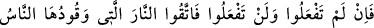

“vav”ın hemzeden çevrildiği farzedilirse o zaman “bir şeyin geriye kalan kısmı,
bâkiyye” mânâsına gelir. En son mânâya göre sûre: “Kur’ân-ı Kerîm’de bulunan,
birbirinden ayrı olan parçaların adıdır.”
Eğer Hz. Muhammed (s.a.)’e indirdiğimiz Kur’ân-ı Kerîm’in Allah tarafından
indirilmiş bir vahiy olduğunda şüphe ediyorsanız, nazımdaki güzellik ve ifâdedeki
üstünlük bakımından ona benzer bir sûre getiriniz. Mâdem ki Kur’ân’ın beşer sözü
olduğunu savunuyorsunuz; siz de beşersiniz; yaratılış, cevher ve lisân bakımından Hz.
Muhammed (s.a.) gibisiniz; bu hususta O’nun size bir üstünlüğü yoktur. O halde, siz de
O’nun getirdiği gibi bir söz getirin.
Burada şuna da işâret etmek gerekir: Allah’ın sıfatı, kelâmı ve vahyi olması
bakımından Kur’ân-ı Kerîm’in bir misli olamaz. Allah Teâlâ’nın zâtının bir misli
olmadığı gibi, sıfatlarının da bir misli olamaz. Âyette zikredilen “misl” den maksad,
müşriklerin zanlarına göre olandır. Çünkü onlar: “İstesek, biz de bunun gibisini
söyleriz.” (el-Enfâl, 8/31) diyorlardı. Bu açıklama et-Teysîr isimli eserden alınmıştır.
“Şühedâ”; şehîd kelimesinin çoğulu olup, şâhidlikte bulunan, hâzır olan ve yardım
eden mânâlarına gelir.
Siz, Kur’ân’a karşı gelmekte başarı elde etmek için, Allah’ı bir tarafa bırakarak
mühim işlerde kendilerine başvurduğunuz, felâket ve musîbet anlarında kendilerine
sığındığınız reislerinizi, eşrafınızı ve aranızdaki hukûkî meselelerin halli için şâhid
tuttuğunuz, sözüne güvenilir emîn kimseleri veya insanlardan ve cinlerden size yardım
edebilecek herkesi, yardıma çağırın. Başka bir mânâya göre: Allah’a ortak koşup
taptığınız ve kıyâmet günü sizin doğruluk üzere olduğunuza şâhidlik edeceklerini
umduğunuz putlarınızdan yardım dileyin, demektir.
Halktan yardım dilemek hiçbir fayda vermez. Âcizin âcize dönmesi de bir mânâ ifâde
etmez. Bu sebeble ihtiyaçlarını ancak onları yerine getirmekte güçlük çekmeyecek
birine arzet! Sâdece hazîneleri tükenmez birisinden iste! Sana yalnız başına yardım
edecek, seni her yönden muhâfaza edecek, seni mal olmadan da zengin edecek birine
dayan! O seni himâye etti mi, çok düşman az olur; O sana yetti mi, az mal, çok olur.
Eğer Kur’ân’ı, Muhammed (s.a.)’ın uydurduğu ve putlarınızın kıyâmet günü sizin
doğruluğunuza şâhidlik edecek kimseler olduğu konusunda sâdık iseniz böyle yapın.
Yâni, Kur’ân sûrelerinin birine benzer bir sûre getirin.
24. Bunu yapamazsanız -ki elbette yapamayacaksınız- yakıtı, insan ve taş olan
cehennem ateşinden sakının. Çünkü o ateş kâfirler için hazırlanmıştır.
Şâyed bütün gücünüzü harcadığınız halde emrolunduğunuz üzere Kur’ân’ın bir